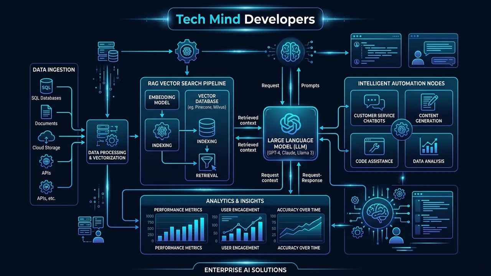

How Businesses Can Use Large Language Models Today: Practical Guide and Business ROIBusinesses Aaj Large Language Models Ka Use Kaise Karein: Practical Guide Aur Real ROI
September 27, 2026 5 min read1 views Tech Mind Developers Engineering Team

Most companies begin their artificial intelligence journey by buying a few employee chatbot subscriptions. While workers use these tools to write emails or polish PowerPoint slides, company executives quickly realize that casual browsing does not generate real business return on investment. The true financial upside comes when language models connect directly with your core database, customer tickets, and billing software.
At Tech Mind Developers, our engineering team specializes in connecting raw language models to real business operations through custom software development and autonomous AI agent development services. Moving away from casual browser chats to private, secure pipelines allows your company to eliminate repetitive manual desk work while keeping every confidential record safely locked inside your private infrastructure. Here is how forward-thinking enterprises use language models today to drive measurable profit and operational speed.
How Businesses Actually Use Large Language Models: Direct Answer
Quick Answer: Modern businesses use Large Language Models by integrating them with internal enterprise databases via Retrieval-Augmented Generation (RAG) to automate customer WhatsApp interactions, parse unstructured vendor invoices, summarize technical contracts, and assist staff with instant policy search. This delivers measurable labor savings without exposing company data to public models.
Instead of treating language models as general question-and-answer bots, successful enterprises deploy them as specialized natural language processors. When an incoming email arrives from an overseas buyer asking for product specifications and bulk discounts, a custom model pipeline reads the message, fetches verified prices from your SQL database, drafts a professional response, and flags the lead for a sales manager.
This closed-loop integration eliminates the biggest problem businesses face with raw public models: factual hallucinations. By giving the model access only to verified internal files and strict validation rules, your software provides instant, accurate answers 24 hours a day without risking your brand reputation.
The Three Practical LLM Implementation Paths for Companies
When leadership decides to implement language models, they generally choose between three distinct architectural paths depending on budget and privacy needs:
Commercial API Integration: Connecting models like Claude, GPT-4, or Gemini via enterprise APIs with zero data retention. This offers rapid deployment and zero server maintenance costs for standard operations.
Retrieval-Augmented Generation (RAG): Setting up a private vector database that indexes your internal PDFs, catalogs, and manuals. The model searches this database first before answering user queries, ensuring 100% verified facts.
Self-Hosted Open-Weight Models: Running models like Llama or Mistral on dedicated local GPUs or private cloud instances. This is the ultimate choice for defense, healthcare, and financial firms requiring complete offline security.
High-ROI Business Use Cases for Language Models
To produce immediate returns, companies must focus on high-friction operational bottlenecks rather than abstract experiments. The six most profitable enterprise use cases include:
WhatsApp Customer Support
Automate 80% of customer order status queries, product questions, and return requests with instant multilingual WhatsApp responses powered by our intelligent WhatsApp and chatbot automation.
Unstructured PDF Parsing
Extract line items, GST numbers, and totals from messy vendor invoices and push data directly into your accounting ERP.
Internal Knowledge Search
Allow customer support and sales teams to query thousands of pages of internal SOPs, manuals, and price sheets in seconds.
Catalog Localization
Translate and adapt thousands of e-commerce product titles and descriptions into multiple regional languages without manual copywriters.
Internal Tool Scripting
Help technical teams generate SQL queries, report scrapers, and API bridge scripts in minutes, accelerating release schedules.
Inbound Lead Triage
Analyze incoming website contact forms instantly, scoring lead intent and routing high-value prospects directly to senior partners.
Architecture Cost Tip
Avoid expensive model fine-tuning unless you have millions of unique domain-specific training pairs. For 95% of business applications, a well-built RAG system delivers better accuracy at one-tenth the financial cost.
Measuring Return on Investment and Managing Hidden Costs
A business automation project must pay for itself quickly. When calculating the return on investment for an LLM workflow, measure two key variables: hours saved on manual keyboard entry and reduction in customer support drop-off rates.
For example, if four staff members spend three hours each day manually verifying supplier shipping manifests, automating that pipeline saves 260 hours per month. Even after accounting for model token expenses and cloud hosting, the net operational savings regularly exceed 75%.
To keep costs low, good software engineering enforces token budgeting, semantic caching, and model routing. Simple queries run on small, fast models costing fractions of a cent, while complex document analysis is routed to high-end reasoning engines only when strictly necessary.
How Tech Mind Developers Engineers Custom Business AI Systems
Deploying AI successfully requires seasoned full-stack engineers who understand database design, cybersecurity, and real-world business constraints. A fragile prototype cobbled together with no-code tools usually breaks the moment customer volume surges.
At Tech Mind Developers, we build production-grade software platforms with built-in machine intelligence that genuinely solves business problems. Whether you need an intuitive customer ordering portal backed by our experience as a leading website development company in Okhla, Delhi, or complex multi-branch inventory tracking built with our custom software development in Aligarh, we engineer every integration to be secure, fast, and remarkably easy for your staff to use.
Our team handles the entire technical pipeline, from database vectorization and API security to seamless mobile app interfaces. With the right custom software partner, your business can start saving hundreds of manual hours every month.
Frequently Asked Questions
Targeted business implementations using Retrieval-Augmented Generation (RAG) typically range from 60,000 to 2,50,000 INR for setup and integration. Monthly running costs depend on query token usage, usually staying between 2,000 and 8,000 INR for typical SME inquiry volumes.
Retrieval-Augmented Generation (RAG) connects an off-the-shelf model to your private company files via a vector search engine. It eliminates the huge expenses and weeks of GPU compute required for fine-tuning, while preventing factual errors and allowing instant updates when company policies change.
Yes. Modern open-weight models such as Llama and Mistral can run locally on dedicated on-premise hardware or private cloud instances. This guarantees that customer data, proprietary formulas, and financial records never leave your physical building.
Tech Mind Developers Engineering Team
Enterprise Software and AI Systems Specialists
We build production-ready software systems, custom enterprise ERPs, and secure private LLM workflows for businesses seeking real efficiency gains.
Turn Complex Manual Work Into Automated Workflows
Let our engineering team connect intelligent language models to your existing databases and operations. Start saving valuable team hours today.
Zyadatar companies AI journey browser chatbot subscriptions khareed kar shuru karti hain. Staff inhein emails ya slides ke liye use karta hai, jisse koi real ROI nahi milta. Asli profit tab milta hai jab language models aapke database, customer tickets aur billing ERP se seedhe connect hote hain.
Tech Mind Developers mein hamari engineering team raw language models ko real business operations se jodti hai. Hamare engineered custom software development aur production AI agent development services ke sath hum simple browser chatbots ko reliable business engines mein badal dete hain. Public browser tools se nikal kar ek private automated pipeline setup karne se aapka staff thaka dene wale manual data entry se azaad ho jaata hai aur company ka confidential data bhi 100% protected rehta hai. Aaiye dekhte hain ki smart companies aaj language models se real profit kaise generate kar rahi hain.
Businesses Large Language Models Ka Real Use Kaise Karti Hain: Direct Answer
Quick Answer: Modern businesses Large Language Models ko Retrieval-Augmented Generation (RAG) ke zariye apne private databases se jodkar use karti hain, jisse customer WhatsApp support, vendor invoice parsing, technical contract summary aur staff knowledge search automate ho jaata hai. Isse staff ka time bachta hai aur company data safe rehta hai.
Language models ko sirf general question-answer tool samajhne ke bajaye smart enterprises inhein automated processing pipelines ki tarah use karti hain. Jab kisi buyer ka email aata hai jisme bulk discount aur product details maangi jaati hain, toh ek custom model pipeline email padhti hai, aapke SQL database se real rates nikaalti hai, professional reply draft karti hai aur sales team ko alert bhejti hai.
Is secure system se hallucinations ka khatra bilkul khatam ho jaata hai. Model ko sirf aapke verified company documents dekhne ki ijazat hoti hai aur strict guardrails lage hote hain, jisse customer ko 24 ghante accurate aur fast response milta hai bina brand image kharab hue.
Companies Ke Liye LLM Implementation Ke Teen Practical Raste
Jab company management LLM implement karne ka decision leti hai, toh budget aur data security ke hisaab se 3 practical technical options samne aate hain:
Commercial API Integration: Claude, GPT-4 ya Gemini ko enterprise zero-retention APIs ke zariye connect karna. Yeh fast live hota hai aur server maintain karne ka jhanjhat nahi rehta.
Retrieval-Augmented Generation (RAG): Ek private vector database banana jo aapki company ke PDFs, product manuals aur pricing sheets ko index karta hai. Model pehle is data ko search karta hai aur 100% verified jawab deta hai.
Self-Hosted Open-Weight Models: Llama ya Mistral jaise open models ko apne private cloud ya office GPU server par run karna. Yeh un firms ke liye best hai jahan customer data bahar bhejna legally mana hai.
Language Models Ke High-ROI Business Use Cases
Immediate business profit ke liye un manual bottlenecks ko target karna chahiye jahan staff ka sabse zyada time waste hota hai. Sabse high-value practical use cases yeh hain:
WhatsApp Support Automation
Customer order status, pricing aur return queries ko automated WhatsApp responses se nipatayein hamari WhatsApp aur AI chatbot automation ke zariye.
Staff hazaron pages ki company policies, technical manuals aur rate sheets ko seconds mein search karke instant answer paaye.
E-Commerce Catalog Localization
Hazaron products ke titles aur descriptions ko regional languages mein bina expensive copywriters ke translate aur adapt karein.
Internal Tool Scripting
Tech team ke liye SQL queries, report scrapers aur API connectors minutes mein generate karke software delivery speed badhayein.
Inbound Lead Triage
Website par aane wale inquiries ko AI turant analyze karta hai, lead score nikaalta hai aur hot clients ko senior sales team ko assign karta hai.
Architecture Cost Tip
Model fine-tuning ke chakkar mein lakhon rupaye mat phoonkiye jab tak aapke paas millions of custom data points na hon. 95% business use cases ke liye ek solid RAG system 10 guna saste mein double accuracy deta hai.
ROI Calculate Karna Aur Hidden Kharchon Ko Control Karna
Kisi bhi software automation project ka financial return clear hona chahiye. LLM project ka ROI measure karte waqt do baatein dekhein: manual data entry ke bache hue ghante aur customer drop-off mein aayi kami.
Misaal ke taur par agar 4 staff members rozana 3 ghante supplier invoices check karne mein lagate hain, toh is pipeline ko automate karne se mahine ke 260 ghante bachte hain. Cloud hosting aur model token cost nikaalne ke baad bhi net savings 75% se zyada rehti hai.
Kharcha control mein rakhne ke liye smart engineering token limits, semantic caching aur model routing use karti hai. Simple queries saste fast models handle karte hain aur heavy document analysis ke liye hi high-end reasoning models call hote hain.
Tech Mind Developers Custom Business AI Systems Kaise Banata Hai
AI ko business mein safal banane ke liye aise full-stack developers chahiye jo database architecture, data security aur business logic ko acchi tarah samajhte hon. No-code tools se banaye gaye temporary bots high customer traffic aate hi fail ho jaate hain.
Tech Mind Developers mein hum robust software platforms banate hain jinme intelligent AI workflows pehle se integrated hote hain. Chahe aapko customer retention ke liye fast web portal chahiye ho jiske liye aap hamari website development company in Okhla, Delhi team se jud sakte hain, ya multi-branch inventory ke liye hamare custom software development in Aligarh systems dekh sakte hain, hamara focus hamesha security aur simplicity par hota hai.
Hamari engineering team database indexing se lekar clean mobile app interface tak poori pipeline handle karti hai. Ek sahi software partner ke sath judkar aapka business har mahine hazaron manual ghante bacha sakta hai.
Frequently Asked Questions
Targeted business RAG implementations ka setup cost 60,000 se 2,50,000 INR ke beech rehta hai. Monthly API usage cost customer volume par depend karta hai jo normal SME business ke liye 2,000 se 8,000 INR ke beech rehta hai.
Retrieval-Augmented Generation (RAG) model ko aapke private files aur database se vector search ke zariye jodta hai. Yeh model fine-tuning ke lakhon rupaye bachaata hai, hallucinations rokta hai aur company policy badalne par turant update ho jaata hai.
Haan. Llama aur Mistral jaise modern open models office ke local GPU server ya private cloud par run ho sakte hain. Isse company ka customer data, accounts aur formulas kabhi physical premises se bahar nahi jaate.
Tech Mind Developers Engineering Team
Enterprise Software and AI Systems Specialists
Hum businesses ke liye custom enterprise software, scalable cloud applications aur private LLM workflows banate hain jo real business efficiency aur cost savings laate hain.
Apne Manual Kaam Ko Automated Workflows Mein Badlein
Hamari engineering team se intelligent language models ko apne databases aur operations se connect karwayein. Aaj hi apne staff ke keemti ghante bachana shuru karein.